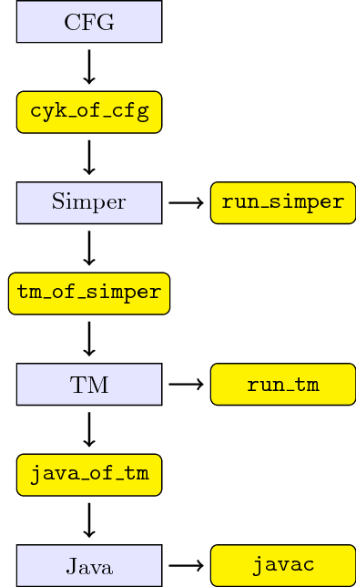

This page contains material that supplements the article [Grigore, Java Generics are Turing Complete, arXiv].
Several programs are included, and they fit together as follows:

The data formats are as follows:
The programs run_simper and run_tm are interpreters, meant to be used for testing. The program javac is meant to be a compiler, but we use it here as an interpreter. The program cyk_of_cfg is a parser generator. The programs tm_of_simper and java_of_tm are compilers.
The rest of the document assumes that you can run these programs. More precisely, it assumes you are in a Docker container, started as follows:
docker run -ti rgrig/javats
You might need to install Docker, if you don't already have it. Alternatively, you could download the sources from the end of this document, and compile the programs yourself. Each of the examples below assumes you use the Docker method, and each of the examples starts by reminding you how to start the Docker container. But, please don't run a Docker container inside a docker container inside a …
Do not expect javac to be an efficient interpreter: it was not meant to be an interpreter at all. Also, tm_of_simper generates rather inefficient Turing machines: they are small enough for run_tm, but way too big for javac. However, if you are willing to write the Turing machine by hand, then javac will likely handle it. If you would be interested in adding optimizations to tm_of_simper, or even in re-implementing it completely in a better way, please let me know.
The first example from the paper (Section 6.1) is a Turing machine that counts, starting from a given $k$ bit number, up to $2^k-1$ and then halts. In ASCII notation, it looks as follows:
States { start flip rewind }
Alphabet { b0 b1 end }
Transitions {
start hash -> flip end Right
flip b0 -> rewind b1 Left
flip b1 -> flip b0 Right
flip hash -> Halt
rewind b0 -> rewind b0 Left
rewind b1 -> rewind b1 Left
rewind end -> flip end Right
}
Let's run it:
docker run -ti rgrig/javats mkdir work cp tm/count.tm work cd work echo "b0 b0" | run_tm -v count.tm
If all is OK, you should see:
start: <hash> b0 b0
flip: end <b0> b0
rewind: <end> b1 b0
flip: end <b1> b0
flip: end b0 <b0>
rewind: end <b0> b1
rewind: <end> b0 b1
flip: end <b0> b1
rewind: <end> b1 b1
flip: end <b1> b1
flip: end b0 <b1>
flip: end b0 b0 <hash>
HALT
The least significant bit is towards the left. The head of the Turing machine is marked by angle brackets. If we look only at those lines where the head is on the end symbol we see
rewind: <end> b1 b0
rewind: <end> b0 b1
rewind: <end> b1 b1
If we run
echo "b0 b0 b0 b0" | run_tm -v count.tm | grep '<end>'
we see
rewind: <end> b1 b0 b0 b0
rewind: <end> b0 b1 b0 b0
rewind: <end> b1 b1 b0 b0
rewind: <end> b0 b0 b1 b0
rewind: <end> b1 b0 b1 b0
rewind: <end> b0 b1 b1 b0
rewind: <end> b1 b1 b1 b0
rewind: <end> b0 b0 b0 b1
rewind: <end> b1 b0 b0 b1
rewind: <end> b0 b1 b0 b1
rewind: <end> b1 b1 b0 b1
rewind: <end> b0 b0 b1 b1
rewind: <end> b1 b0 b1 b1
rewind: <end> b0 b1 b1 b1
rewind: <end> b1 b1 b1 b1
It should now be clear that this machine counts in binary. However, if we do not use the verbose flag (-v) then we get at most one bit of output: HALT or STUCK. In other words, we can solve decision problems; for other problems we need to compute their output bit by bit. But that's in general: for our Turing machine that counts the output will always be HALT, printed after more or less time.
Now let's produce Java code:
java_of_tm count.tm
You should see a file count.java, and you should be able to compile it:
javac count.java
This did not run the Turing machine. To run the Turing machine, we need to first provide it with some input.
cp ../tm/Tape.java . javac Tape.java
This did run the Turing machine, but on an empty tape. You can run it on a different tape by inserting method calls in-between start and stop in Tape.java. For example, you could edit Tape.java so it looks as follows:
class Tape {
void f() {
E<?super E<?super Z>> l =
Builder.start.b0().b0().stop();
}
}
and then run the Turing machine on the input tape ‘b0 b0’.
javac Tape.java
There is no type error, which corresponds to the output HALT. (We will see in a later example how STUCK results in type errors.) You can try to increase the number of calls to b0(). On my computer, I get a StackOverflowError already at four bits. No matter: we can ask javac to work harder:
javac -J-Xss100m Tape.java
Now we can keep adding bits, and watch how the compilation time goes up, exponentially. With 10 bits, it already takes about a minute.
Instead of implementing a Turing machine to count, we can do it in a straightforward way in Simper.
docker run -ti rgrig/javats mkdir work cp simper/count.simper work cd work cat count.simper
You should see
var x
x := 0
while x != 1 { ++x }
halt
You can run this directly, and you can compile it to Java.
echo "" | run_simper count.simper tm_of_simper count.simper echo "" | run_tm count.tm java_of_tm count.tm
The resulting Java code is 4.6MiB in size, though. If you have lots of memory, then you might be able to compile it, although it's also possible that javac will run out of memory.
javac -J-Xss100m count.java # this might take a minute or two
This time we don't need anything on the input tape. so use the following Main.java:
cp ../tm/Tape.java . javac -J-Xss100m Tape.java
This should terminate without a type error. On my machine, javac runs out of memory. As I said, tm_of_simper doesn't generate efficient Turing machines, and javac wasn't meant to be an interpreter. If javac does terminate for you, I'd appreciate an email letting me know how long it took and how much memory it used.
We can count, but we can also perform more interesting computations. For example, let's compute an Ackermann-like function.
docker run -ti rgrig/javats mkdir work cp simper/ack2.simper work cd work cat ack2.simper
You should see
var m, a0, a1, a2
m := 2
a0 := 0
a1 := 0
a2 := 1
eval: if a0 != 0 { --a0 ++m goto eval }
l1: if a1 != 0 { --a1 a0:=m ++a0 goto eval }
l2: if a2 != 0 { --a2 a1:=m ++a1 goto eval }
if m == 23 { halt }
The usual definition of Ackermann is recursive. However, Simper does not have procedures, nor recursion. Luckily, there is a fun way of computing some function that has the same growth rate, a way which I learned from [Schnoebelen, Revisiting Ackermann-hardness for lossy counter machines and Petri nets, MFCS2010]. So, if you want to understand why I'm saying that the code above computes Ackermann, I'm afraid I'm just going to redirect you to Schnoebelen's paper.
Anyway, even for the simple code from above, we wouldn't want to write the equivalent Turing machine by hand. But, with the tools provided here, you can run the program from above, compile it to a Turing machine, and run that too:
echo "" | run_simper ack2.simper tm_of_simper ack2.simper echo "" | run_tm ack2.tm
Now try to change the 23 in ack2.simper to some other number, and then repeat the steps above. The Turing machine should get stuck. Now let's generate Java code:
java_of_tm ack2.tm
The generated ack2.java has 32MiB. Alas, javac doesn't seem able to compile this on a computer with 32GiB.
A fun example is the Turing machine designed recently that searches for contradictions in set theory (ZF), and halts when it finds one. (We hope it won't halt, but we can't hope to prove it won't halt.) First, copy this Turing machine to your working directory.
docker run -ti rgrig/javats mkdir work cp tm/zf.tm work/ cd work/
You can run this machine using the Turing machine interpreter.
echo "" | run_tm zf.tm
You can also compile it to Java:
java_of_tm zf.tm javac -J-Xss100m zf.java
If the previous step doesn't work on your computer, it might be you need more memory. In that case, you can download the bytecode produced by javac from here:
Now, you can run the Turing machine using javac:
cp ../tm/Tape.java . javac -J-Xss100m Tape.java
Or, if you use the downloaded Jar, say
javac -J-Xss100m -cp zf.jar Tape.java
In any case, don't expect javac to terminate normally.
Suppose we want to recognize palindromes using javac. There are three ways we can do it: by implementing a Turing machine, by implementing a Simper program, or by specifying a context free grammar. The last option is the easiest, and the most inefficient one. Let's start with it.
docker run -ti rgrig/javats mkdir work cp cfg/palindrome.cfg work/ cd work/ cat palindrome.cfgYou should see
START: | a START a | b START b | a | b;
You can now compile this to a Turing machine and run it:
cyk_of_cfg palindrome.cfg tm_of_simper palindrome.cyk.simper echo "" | run_tm palindrome.cyk.tm # takes a minute, prints HALT echo "a b" | run_tm palindrome.cyk.tm # takes a minute, prints STUCK echo "a b a" | run_tm palindrome.cyk.tm # ..., prints HALT
We can also generate Java code from the Turing machine
java_of_tm palindrome.cyk.tm
However, the result is too big (about 1.4GiB) to be compiled with javac. We can also start with a recognizer written directly in Simper.
rm * # you must still be in directory work/ cp ../simper/palindrome.simper . cat palindrome.simper
You should see
var i, j, x
if n == 0 { halt }
i := 0
j := n
--j
loop:
if input[i] == input[j] {
if j == 0 { halt }
else { ++i --j goto loop }
}
x := "a" x := "b" // hack to tell tm_of_simper to include these letters
As before, you can compile this to a Turing machine and test it:
tm_of_simper palindrome.simper echo "" | run_tm palindrome.tm # prints HALT echo "a b" | run_tm palindrome.tm # prints STUCK echo "a b a" | run_tm palindrome.tm # prints HALT
We can compile the Turing machine to Java:
java_of_tm palindrome.tm
This time the source is considerably smaller than 1.4GiB: only 39MiB. Alas, still out of the reach of javac on my machine.
Finally, we can hand-code a Turing machine for recognizing palindromes.
rm * cp ../tm/palindrome.tm . echo "" | run_tm palindrome.tm # prints HALT echo "a b" | run_tm palindrome.tm # prints STUCK echo "a b a" | run_tm palindrome.tm # prints HALT
From this one you can get bytecode:
java_of_tm palindrome.tm javac palindrome.java
And we can even run it.
cp ../tm/Tape.java . javac Tape.java
Now edit Tape.java to add some letters in-between start and stop. For example, you can make it look like this:
class Tape {
void f() {
E<?super E<?super Z>> l =
Builder.start.a().b().stop();
}
}
Since ‘a b’ is not a palindrome, the following command should report a type error:
javac Main.java
But if you change the tape to something that is a palindrome, then it should compile. Possibly after giving the compiler more stack (-J-Xss100m), and possibly after a lot of time; but it will compile.
The standard example of an inherently ambiguous context free language is $\{\,a^m b^n c^n d^m\mid\,m,n\ge 0\} \cup \{\,a^m b^m c^n d^n\mid\,m,n\ge 0\}$. You can see the grammar and the hand-crafted Turing machine here:
docker run -ti rgrig/javats cat cfg/abcd.cfg cat tm/abcd.tm
And you can play with these files in the same way we did with the palindromes in the previous section.
The grammar for CFGs is as follows:
<start> ::= { <rule> }
<rule> ::= <nonterminal> ':' <element> { '|' <element> }
<element> ::= <nonterminal>
<element> ::= <terminal>
The grammar for Simper is as follows:
<program> ::= <decls> <body>
<program> ::= <body>
<decls> ::= 'var' <id> { ',' <id> }
<body> ::= { <command> }
<command> ::= <label> ':'
<command> ::= 'goto' <label>
<command> ::= <lvalue> ':=' <value>
<command> ::= 'if' <condition> '{' <body> '}' <else>
<command> ::= 'while' <condition> '{' <body> '}'
<command> ::= 'switch' <value> '{' { <branch> } '}'
<command> ::= '++' <lvalue>
<command> ::= '--' <lvalue>
<command> ::= 'halt'
<else> ::=
<else> ::= 'else' '{' <body> '}'
<label> ::= <id>
<value> ::= <lvalue>
<value> ::= <rvalue>
<lvalue> ::= <id>
<lvalue> ::= <id> '[' <value> { ',' <value> } ']'
<rvalue> ::= 'array' '[' <value> { ',' <value> } ']' '(' <value> ')'
<rvalue> ::= <num_literal>
<rvalue> ::= <sym_literal>
<condition> ::= <value> '==' <value>
<condition> ::= <value> '!=' <value>
<branch> ::= <value> '{' <body> '}'
Simper has two special variables, which should not be declared explicitly: input and n. A numeric literal is a nonnegative integer written in decimal notation. A symbol literal is an identifier (without spaces) put in double quotes.
<machine> ::= <Q> <alphabet> <delta>
<Q> ::= 'States' '{' { <state> } '}'
<alphabet> ::= 'Alphabet' '{' { <letter> } '}'
<delta> ::= 'Transitions' '{' { <transition> } '}'
<transition> ::= <state> <letter> '->' <state< <letter> { ';' <letter> } <move>
<transition> ::= <state> <letter> '->' 'Halt'
<transition> ::= <state> '_' '->' <move>
<transition> ::= <state> '_' '->' <state>
<move> ::= 'Left'
<move> ::= 'Stay'
<move> ::= 'Right'
<state> ::= <id>
<letter> ::= <id>
The paper contains two theorems. Their proofs can be paraphrased as follows.
Theorem 1. It is undecidable whether $t$ is a subtype of $t'$ according to a given class table.
Proof. See java_of_tm.ml.
Theorem 6. Given is a context free grammar $G$ that describes a language ${\cal L}\subseteq\Sigma^*$ over an alphabet of method names. We can construct Java class definitions, a type $T$, and expressions ${\it Start}$, ${\it Stop}$ such that the code $$ T\; \ell \quad=\quad {\it Start}.f^{(1)}().f^{(2)}()\ldots f^{(m)}().{\it Stop} $$ type checks if and only if $f^{(1)}f^{(2)}\ldots f^{(m)} \in {\cal L}$. Moreover, the class definitions have size polynomial in the size of $G$, and the Java code can be type-checked in time polynomial in the size of $G$.
Proof. See cyk_of_cfg.ml and tm_of_simper.ml, in addition to java_of_tm.ml.
So, here is the source code:
Changelog:
20160817 first webpage